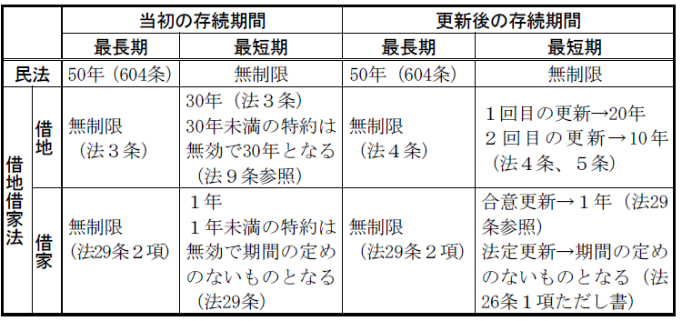

第６編 契約各論
第６章 賃貸借
第１節 賃貸借の意義
賃貸借とは、当事者の一方（賃貸人）が相手方（賃借人）に物を使用収益させることを約束し、相手方がこれに対してその賃料を支払うこと及び引渡しを受けた物を契約終了時に返還することを約束する契約をいう（601条）。
諾成・双務・有償契約であり、継続的契約関係の典型である。
不動産賃貸借は、賃借人の生活の基盤となっていることから、民法の特別法として、借地借家法が制定されている。
同法にいう借地権とは、建物所有を目的とする地上権又は土地賃借権である（借地借家法２条１号）。
同法は、この借地権と建物賃借権についての特別法である。
第２節 賃貸借の成立
賃貸借は、賃貸人が賃借人に目的物を使用･収益させることを約し、賃借人が賃料を支払うこと及び引渡しを受けた物を契約終了時に返還することを約することによって成立する諾成契約である（601条）。
賃貸借の目的物は、「物」（601条）である。物の一部（ex.一筆の土地の一部）でもよいが、登記をするには前提として分筆登記が必要である。
消費することによって使用目的を達成する動産は消費貸借の対象となり、原則として当該「物」には含まれない。
第３節 賃貸借の存続期間
1. 民法の原則
(1) 契約期間の決定・最長期間
賃貸借の存続期間は、50年を超えることができず、契約でこれより長い期間を定めても、50年とされる（604条１項）。
なお、民法上、最短期間の制限はない。
(2) 短期賃貸借
短期賃貸借とは、602条各号に定める期間を超えない賃貸借をいい、処分の権限を有しない者は、同条各号に定める期間を超える賃貸借を行うことができず、越えた分は定めても無効となる（602条）。
期間の長い賃貸借には実際上処分行為といい得るので、処分の権限を有しない者が単なる管理行為としてすることができる賃貸借を短期賃貸借に限定するものである。
処分権限のない者としては不在者の財産管理人（28条）、権限の定めのない代理人（103条）、相続財産の分割があるまでの相続財産の管理人（918条３項）、相続財産の管理人（953条）等がある。
2. 借地借家法による修正
(1) 借地関係
(a) 原則
借地権の存続期間は30年とされるが、契約でこれより長い期間を定めたときは、その期間となる。（借地借家法３条）。本条は、強行規定なので（借地借家法９条）、原則として借地における最短期間は30年となる。
(b) 定期借地権
借地権は、原則として期間が満了しても賃貸人は正当な事由がない限り更新を拒めない。これに対して、定期借地権は期間満了により当然に契約が終了する賃貸借である。
ⅰ （一般）定期借地権（借地借家法22条）
（一般）定期借地権とは、存続期間を50年以上として借地権を設定する場合には、①契約の更新②建物の築造による存続期間の延長がなく、③借地借家法13条の規定による建物買取請求をしないこととする旨を定めた賃借権をいう（借地借家法22条前段）。
この場合においては、公正証書等の書面で契約することが要件である（借地借家法22条後段）。
ⅱ 建物譲渡特約付借地権（借地借家法24条）
建物譲渡特約付借地権とは、借地権を消滅させるため、その設定後30年以上を経過した日に借地権の目的である土地上の建物を借地権設定者に相当の対価で譲渡する旨を定めた借地権をいう（借地借家法24条１項）。
ⅲ 事業用定期借地権（借地借家法23条）
① 専ら事業の用に供する建物（居住の用に供するものを除く。）の所有を目的とし、かつ、存続期間を30年以上50年未満として借地権を設定する場合においては、①契約の更新②建物の築造による存続期間の延長がなく、並びに③借地借家法13条の規定による建物買取請求をしないこととする旨を定めることができる（借地借家法23条１項）。
② 専ら事業の用に供する建物（居住の用に供するものを除く。）の所有を目的とし、かつ、存続期間を10年以上30年未満として借地権を設定する場合には、①契約の更新②存続期間の延長の規定③建物買取請求等の規定（借地借家法３条～８条、13条、18条）は適用しない（借地借家法23条２項）。
※ 上記の①・②の契約は、公正証書によってしなければならない（借地借家法23条３項）。
(c) 一時使用目的の借地権（借地借家法25条）
一時使用目的の借地権とは、臨時設備の設置その他一時使用のための借地権をいい、一時使用目的の借地権を設定したことが明らかな場合には、借地借家法３条～８条、13条、17条、18条、22条～24条の規定の適用は排除される（借地借家法25条）。
(2) 借家関係
(a) 原則
建物の賃貸借において、その存続期間は当事者間の合意により定めることができるが、期間が１年未満とする建物の賃貸借は、期間の定めのないものとみなされる（借地借家法29条１項）。
(b) 期限付借家権
建物の賃貸借は、原則として、期間が満了しても賃貸人は正当な事由がない限り更新を拒めない。これに対して、期限付借地権は期間満了により当然に契約が終了する賃貸借である。
ⅰ 定期建物賃貸借（借地借家法38条）
定期建物賃貸借とは、期間の満了により契約が更新されることなく終了する旨を特約で定めた建物賃貸借であり、公正証書等の書面によることが必要であるものをいう（借地借家法38条１項前段）。この場合は、期間を１年未満と定めることも許される（借地借家法38条１項後段）。
ⅱ 取壊し予定の建物の賃貸借（借地借家法39条）
取壊し予定の建物の賃貸借とは、法令又は契約により一定期間を経過した後に建物を取り壊すべきことが明らかな場合において、建物を取り壊すこととなる時に賃貸借が終了するものをいう（借地借家法39条１項）。取り壊すべき事由を記載した書面でなされることが必要である（借地借家法39条２項）。
(c) 一時使用目的の建物の賃貸借（借地借家法40条）
一時使用目的の建物の賃貸借であることが明らかな場合には、借家に関する規定の適用はなく、民法が適用される（借地借家法40条）。
1. 民法の原則
期間の満了により、賃貸借は当然に終了するのが原則である。
ただし、期間満了後、賃借人が使用・収益を継続する場合に、賃貸人がこれを知って異議を述べないときは同一の条件をもって更新したものと推定される（黙示の更新。619条１項前段）。
黙示の更新があった場合、いつでも解約申入れができることになる（619条１項後段、617条）。
2. 借地借家法による修正
(1) 借地関係
(a) 合意による更新（借地借家法４条）
合意による更新がなされる場合には、更新期間は自由に定めることができるが、最短期間が法定されている。
最初の更新では20年、その後の更新では10年である。
(b) 法定更新（借地借家法５条）
以下のⅰ又はⅱの場合には、従前の契約と同一の条件で契約を更新したものとみなされる。
ⅰ 存続期間満了後、借地権者が契約の更新を請求した場合（同条１項本文）
ⅱ 存続期間満了後、借地権者が土地の使用を継続する場合（同条２項、１項本文）
いずれの場合も、賃貸人が遅滞なく異議を述べればこの限りでないとされる（同条１項ただし書、２項）。この異議が認められるためには「正当の事由」が必要である。正当事由の有無の判断に際しては、土地所有者が土地を使用する必要性、借地に関する従前の経過及び利用状況、立退料の提供等を考慮すべきことが例示されている（借地借家法６条）。
法定更新の場合も、最初の更新については20年、その後の更新については10年の期間となる（借地借家法４条）。
(2) 借家関係
期間の定めのある建物賃貸借の場合、賃貸人は期間満了の１年前から６か月までの間に、正当の事由を備えた更新拒絶の通知を賃借人にしなければならず、これを怠ると従前の契約と同一の条件で契約を更新したものとみなされる（借地借家法26条１項本文、28条）。
更新後の存続期間は期間の定めのないものとなる（借地借家法26条１項ただし書）。
【不動産賃借権の存続期間（ただし、定期借地権等及び定期建物賃貸借等を除く）】
（「法○条」は、借地借家法の条文を指す。）

第４節 賃貸借の効力
Ⅰ 賃貸人の義務
賃貸人は、賃借人に目的物を使用・収益させる義務を負う。この義務には、賃借人が安全・快適な生活を保障するために努力する義務も含まれることから、以下のような種々の義務が導き出される。
1. 目的物引渡義務
貸主は、まず目的物を借主に交付しなければならない。
2. 妨害排除義務
賃貸人みずから、賃借人の使用収益を妨げてはならない（例えば、第三者への譲渡・賃貸等は禁止される）のみならず、第三者が目的物の使用を妨げる場合には、賃貸人は、これを積極的に排除しなければならない。
3. 賃貸人の修繕義務（606条）
(1) 修繕義務の内容（606条１項）
賃貸人は、賃貸物の使用及び収益に必要な修繕をする義務がある（606条１項本文）。なお、このような義務は使用貸借、地上権では認められていない。
(a) 不可抗力による修繕が必要となった場合
賃貸人の責めに帰すことができないもの（ex．天災、地変等の不可抗力によるもの）でも修繕義務の対象となる。
(b) 賃借人の責めに帰すべき事由により修繕が必要となった場合
賃借人の責めに帰すべき事由によって生じたときは、賃貸人は修繕義務を負わない（606条１項ただし書）。
(c) 修繕義務の軽減・免除
特約で修繕義務を軽減・免除することも認められる（通説）。
(d) 修繕義務の不履行
修繕義務の不履行は債務不履行となる。
この場合、賃借人は、使用収益の不十分な程度に応じて、賃料の全部又は一部につき、同時履行の抗弁権により支払を拒絶できる（大判大５.５.22）。
(2) 賃借人の受忍義務
修繕は賃貸人の権利でもある。従って、賃借人は、修繕を受忍する義務がある（606条２項）。このために賃借人が賃借した目的を達することができない場合には、賃借人は契約を解除することができる（607条）。
(3) 賃借人による修繕
修繕が必要である場合に、その旨を賃借人が賃貸人に通知し又は賃貸人がその旨を知ったときに、賃貸人が相当の期間内必要な修繕をしないときや、急迫の事情があるときには、賃借人において目的物の修繕をすることができる（607条の２）。
1. 必要費償還義務（608条１項）
賃借人は必要費を支出した場合、「直ちに」その償還を請求できる。
「賃貸人の負担に属する必要費」とは、賃借物の現状維持・原状回復に資する費用のみならず、賃借物を通常の用法に適する状態にするため支出された費用も含む（ex．近隣の土地の地盛りのため宅地として借りた土地に雨水が停滞するので賃借人が地盛をした費用（大判昭12.11.16）、借家における畳替えの費用、雨もりを生じた屋根の修理費）。
2. 有益費償還義務（608条２項）
「賃貸借の終了の時に」賃借人の支出した費用によって生じた価格の現存する場合に限り、賃貸人の選択に従い、支出額か増加額を償還する必要がある（608条２項本文、196条２項）。
ただし、裁判所による期限の許与が認められている（608条２項ただし書）。
(1) 「有益費」の意義
「有益費」とは、目的物の価値が増加する場合の改良費であり、目的物自体に加えられたか否かを問わない（ex．家屋前の道路のコンクリート工事（大判昭５.４.26）、借地における石垣、下水道設備、借家における模様替え、家屋の賃借人が便所を洋式に替えた場合）。
ただし、その場所的環境等から通常予想される使用者にとってぜいたくなものは除かれる。
(2) 有益費償還請求権の成立・存続
賃借人が賃借建物に付加した新築・増築部分が、賃貸人に返還される以前に、賃貸人、賃借人いずれの責めにも帰することができない事由により滅失したときは（価値が現存しないから）当該部分に関する有益費償還請求権は消滅する（最判昭48.７.17）。
賃借人が有益費を支出した後に建物の所有権（賃貸人の地位）が譲渡された場合には、新賃貸人が償還義務を承継する（605条の２第４項、最判昭46.２.19）。
3. 費用償還請求権の行使と効果
(1) 行使期間の制限
費用償還請求権は、貸主が返還を受けた時から１年以内に行使しなければならない（622条、600条１項）。
(2) 賃借人と留置権
賃借人は、費用償還請求権について留置権を有する（295条１項本文）。ただし、裁判所が有益費費用償還請求権について相当の期限を許与したときは、留置権は成立しない。
賃借人は、賃料不払により賃貸借契約を解除された場合でも、費用償還請求権を有するときは、目的物を留置できる。
賃貸借終了後支出した費用は、賃借人が終了を知っていた場合には占有が不法行為によって始まった場合（295条２項）と同視できるから、その後に支出した費用については、留置権は生じない（最判昭46.７.16）。
留置権の効果として、賃貸借終了後も賃借人は借家に従前どおり居住することはできるが、目的物を使用することによって得た利益（賃料相当額）は、不当利得として返還しなければならない。
559条により560条以下が準用され、契約の内容に適合しない物を賃貸の目的物とした貸主は、借主に対して担保責任を負う。
Ⅱ 賃借人の義務
賃借人は賃貸人に賃料を支払う義務を負う。賃料支払義務は賃借人の義務の中心である。
611条１項では、賃借物の一部滅失等による賃料の減額について、賃借人による請求を待たずに、当然に減額されることとしている。
1. 賃料の支払時期（614条）
賃料は、動産・建物・宅地については毎月末に、その他の土地については毎年末に支払わなければならない。ただし、収穫の季節のあるものについては、その季節の後に遅滞なく支払わなければならない。
ただし、これと異なる合意をすることは可能であり、前払と約定されるのが通常である。
2. 減収、賃借物の一部滅失の場合の賃借人による賃料減額請求権・解除権（609条～611条）
(1) 耕作又は牧畜を目的とする土地の賃貸借について、賃借人は、不可抗力によって賃料より少ない収益を得たときは、その収益の額に至るまで、賃料の減額を請求することができる（609条本文）。
この場合において、不可抗力によって引き続き２年以上賃料より少ない収益を得たときは、契約の解除をすることができる（610条）。
(2) 賃借物の一部が滅失その他の事由により使用及び収益をすることができなくなった場合において、それが賃借人の責めに帰することができない事由によるものであるときは、賃料は、その使用及び収益をすることができなくなった部分の割合に応じて、減額される（611条１項）。
また、賃借物の一部が滅失その他の事由により使用及び収益をすることができなくなった場合において、残存する部分のみでは賃借人が賃借した目的を達することができないときは、賃借人は契約の解除をすることができる（611条２項）。この場合、賃借人に帰責事由があっても、債務不履行の一般原則による損害賠償請求で清算を図ることが可能なので、解除することができる。
3. 賃料額の変更（借地借家法11条、32条）
(1) 税金の増減・地価の変動等の経済変動・近隣の相場との比較から、地代・家賃が不相当となると、当事者は地代・家賃の増減請求権を取得する。ただし、一定の期間は増額しない特約がある場合には、それに従う（借地借家法11条１項、32条１項）。
この請求権は形成権と解され、当事者間で合意がなくても裁判所に請求することにより直ちに額が変更される。ただし、額の確定については裁判による。
(2) 増額を正当とする裁判が確定するまでは「相当と認める額の」賃料を支払えばよいが（借地借家法11条２項本文、32条２項本文）、賃借人が主観的に相当と認めた額を支払っていても、自らの支払額が公租公課の額を下回ることを知っていたときには、特段の事情のない限り、債務の本旨に従った履行があったとはいえない（最判平８.７.12）。
1. 善管注意義務（400条）
賃借人は賃借物を返還するまで、善良な管理者の注意をもってその物を保存することを要する。
2. 用法遵守義務（616条、594条１項）
賃借人は、契約又はその賃借物の性質によって定まった用法に従い、使用・収益をしなければならない。
3. 賃借人の通知義務（615条）
善管注意義務の従たる義務として、賃借物の修繕が必要である場合と、賃借物につき第三者が権利を主張している場合の、賃貸人への通知義務が規定されている。
1. 目的物返還義務
賃借人は、賃貸借の終了したときに賃貸物を賃貸人に返還する義務を負う（601条）。
2. 賃貸物を原状に復させる義務
返還の際、賃借人は賃貸物を原状に復して、これに附属させた物を収去する権利がある（622条、599条１項、２項）が、これは同時に義務でもある。
そして、賃貸借が終了したときは、通常使用に伴う損耗及び経年変化によるものを除き、賃借人は原状回復義務を負う（621条本文）。ただし、賃借人に帰責事由がない損傷については、義務を負わない（同条ただし書）。